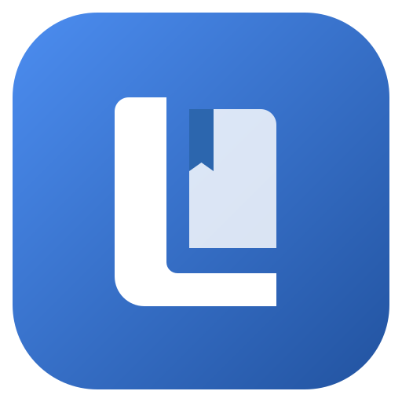

대화에서 기억으로
Claude Code·Codex의 세션 훅과 처리 큐를 통해 마지막 기록 위치부터 이어서 기록합니다.

코딩 에이전트를 위한 프로젝트 기억
새 세션에서 이전 작업의 이유를 다시 찾기 위한 도구입니다. 세션 종료·압축 직전 훅이 대화를 큐에 넣고, 선택한 기록 모델이 주제별 문서를 갱신합니다. 기록 지침은 사용자 결정과 에이전트 제안, 적용 범위와 변경 이유를 구분하도록 하며, 저장된 대화로 내용을 확인할 수 있습니다.
02 / FEATURES
Claude Code·Codex의 세션 훅과 처리 큐를 통해 마지막 기록 위치부터 이어서 기록합니다.
선택한 폴더에 Markdown으로 보관하고 qmd로 색인합니다. Claude Code와 Codex가 qmd MCP로 같은 기억을 검색합니다.
기억 문서에서 저장된 대화 사본과 발언 앵커로 이동해 결정의 맥락을 확인할 수 있습니다.
자동으로 기록된 문서의 변경을 비교하고 커밋할 항목을 고릅니다. 여러 PC의 이력이 갈라지면 근거·선택지·최종 diff를 검토합니다.
트레이와 설정에서 새 버전을 확인하고 설치·재시작을 선택합니다. 진행 중인 기록·동기화·설정 작업을 마쳐야 설치합니다. Linux 앱 내 업데이트에는 AppImage를 사용합니다.
03 / INTERFACE
이미지를 선택하면 크게 볼 수 있습니다.
진행 중인 기록, 대기 세션, 최근 활동을 트레이에서 확인합니다. 연결 문제나 검토할 문서는 Needs attention에 모이고, 하단에서 마지막 동기화 시각을 확인하고 바로 동기화합니다.
CLI가 제공하는 모델과 지원 effort를 선택합니다. 목록을 읽지 못하면 모델 이름을 직접 입력할 수 있습니다. 설정은 바꾸면 적용되며, 화면은 시스템 설정·라이트·다크 중에서 고릅니다.
Manage Lore에서 도구별 MCP, 기억 지침, 검색 스킬과 세션 훅을 각각 확인합니다. 연결 복구·해제와 기억 폴더·검색 색인·필수 도구 관리를 한 창에서 다룹니다.
기억을 작성하는 모델과 검색용 임베딩 모델은 별개입니다. 검색 색인 페이지에서 컬렉션과 경로를 확인하고, 임베딩 모델 변경을 확인한 뒤 이 PC의 색인을 다시 만듭니다.
여러 PC의 이력이 갈라지면 바뀐 문서를 살펴보고 모델 비교를 시작합니다. 왼쪽 목록에서 결정할 항목을 고르고, 원문 인용과 선택지를 확인합니다. Git 줄 충돌이 없어도 관련된 변경을 비교합니다.
선택을 마치면 현재 문서와 반영 후 문서를 diff로 비교합니다. Apply & share로 확인해야 병합·색인·공유를 진행합니다. 모델 비교는 모순을 놓칠 수 있으므로 근거와 최종 문구를 검토합니다.
기억 예시를 살펴본 뒤 사용할 AI 도구와 기억 폴더를 고릅니다. 이 PC에 필요한 준비를 확인하고 연결합니다. 설정 준비 완료와 실제 세션의 기록·검색 성공은 구분합니다.
04 / GETTING STARTED
GitHub Releases에서 운영체제와 CPU에 맞는 설치 파일을 선택합니다. 초기 배포 버전이며, 코딩 CLI·qmd·Git을 함께 사용합니다.
AI 도구와 기억 폴더를 선택하고, 훅과 qmd MCP 연결을 준비하는 방식입니다.
프로젝트 세션을 기록한 다음, 새 세션에서 관련 기억과 근거를 찾아봅니다.
macOS Apple Silicon·Intel, Windows x64, Linux AppImage·DEB를 제공합니다. 운영체제 코드 서명·공증은 적용하지 않아 보안 경고가 나타날 수 있습니다. 앱 내 업데이트에는 별도의 Tauri 서명을 사용합니다.
05 / FAQ
GitHub Releases에서 macOS·Windows·Linux 설치 파일을 제공합니다. 초기 버전이므로 중요한 기억과 동기화 결과는 근거와 함께 확인하십시오.
후속 에이전트에도 qmd MCP와 기억을 찾아보라는 지침이 필요합니다. 기록과 기억 활용은 별도의 단계입니다.
선택한 기억 폴더에 문서와 근거 대화 사본을 저장합니다. 큐·설정·검색 색인은 PC별 앱 데이터에 분리합니다.
문서 보관과 색인은 로컬에서 이루어지지만, 기록 모델 처리에 필요한 대화와 기억은 선택한 CLI의 모델 제공자에게 전달됩니다.